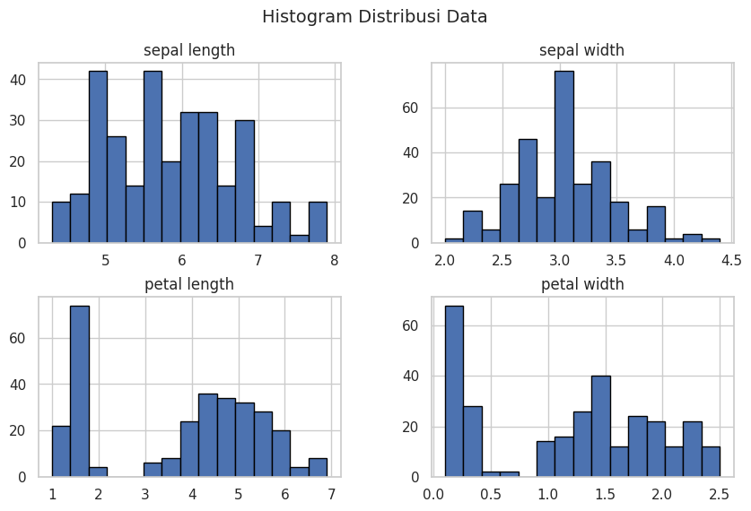

DATA UNDERSTANDING#
tahap pemahaman data yang dilakukan dalam metodologi sains data dan pengembangan AI
!pip install pymysql
Collecting pymysql
Downloading PyMySQL-1.1.1-py3-none-any.whl.metadata (4.4 kB)
Downloading PyMySQL-1.1.1-py3-none-any.whl (44 kB)
?25l ━━━━━━━━━━━━━━━━━━━━━━━━━━━━━━━━━━━━━━━━ 0.0/45.0 kB ? eta -:--:--
━━━━━━━━━━━━━━━━━━━━━━━━━━━━━━━━━━━━━━━━ 45.0/45.0 kB 2.0 MB/s eta 0:00:00
?25h
Installing collected packages: pymysql
Successfully installed pymysql-1.1.1
!pip install psycopg2-binary
Collecting psycopg2-binary
Downloading psycopg2_binary-2.9.10-cp311-cp311-manylinux_2_17_x86_64.manylinux2014_x86_64.whl.metadata (4.9 kB)
Downloading psycopg2_binary-2.9.10-cp311-cp311-manylinux_2_17_x86_64.manylinux2014_x86_64.whl (3.0 MB)
?25l ━━━━━━━━━━━━━━━━━━━━━━━━━━━━━━━━━━━━━━━━ 0.0/3.0 MB ? eta -:--:--
━━━━━━━━━╺━━━━━━━━━━━━━━━━━━━━━━━━━━━━━━ 0.7/3.0 MB 21.9 MB/s eta 0:00:01
━━━━━━━━━━━━━━━━━━━━━━━━━━━━━━━━━━━━━━━╸ 3.0/3.0 MB 60.3 MB/s eta 0:00:01
━━━━━━━━━━━━━━━━━━━━━━━━━━━━━━━━━━━━━━━━ 3.0/3.0 MB 42.5 MB/s eta 0:00:00
?25h
Installing collected packages: psycopg2-binary
Successfully installed psycopg2-binary-2.9.10
!pip install pandas
Requirement already satisfied: pandas in /usr/local/lib/python3.11/dist-packages (2.2.2)
Requirement already satisfied: numpy>=1.23.2 in /usr/local/lib/python3.11/dist-packages (from pandas) (1.26.4)
Requirement already satisfied: python-dateutil>=2.8.2 in /usr/local/lib/python3.11/dist-packages (from pandas) (2.8.2)
Requirement already satisfied: pytz>=2020.1 in /usr/local/lib/python3.11/dist-packages (from pandas) (2025.1)
Requirement already satisfied: tzdata>=2022.7 in /usr/local/lib/python3.11/dist-packages (from pandas) (2025.1)
Requirement already satisfied: six>=1.5 in /usr/local/lib/python3.11/dist-packages (from python-dateutil>=2.8.2->pandas) (1.17.0)
#Mengambil database dari MySql
#Kode untuk Menampilkan data dari mysql ke dalam google collab
import pymysql
import pandas as pd
from tabulate import tabulate
# Koneksi ke MySQL di Aiven.io
MYSQL_HOST = "mysql-3d9be5d4-irismysqll.g.aivencloud.com" # Ganti dengan host MySQL di Aiven.io
MYSQL_PORT = 28758 # Aiven MySQL biasanya menggunakan port 25060
MYSQL_DB = "defaultdb" # Ganti dengan nama database Anda
MYSQL_USER = "avnadmin" # Username dari Aiven.io
MYSQL_PASS = "AVNS_9SRQX7luHCPCP1wxyhh" # Ganti dengan password dari Aiven.io
try:
# Membuat koneksi ke MySQL
conn = pymysql.connect(
host=MYSQL_HOST,
port=MYSQL_PORT,
user=MYSQL_USER,
password=MYSQL_PASS,
database=MYSQL_DB,
ssl={'ssl': {}}, # Aiven.io membutuhkan koneksi SSL
)
cur = conn.cursor()
# Menjalankan query (Ganti 'your_table' dengan nama tabel yang benar)
cur.execute("SELECT * FROM defaultdb.irissql;")
rows = cur.fetchall()
# Mengambil nama kolom
col_names = [desc[0] for desc in cur.description]
# Menampilkan hasil dalam bentuk tabel
df = pd.DataFrame(rows, columns=col_names)
print(tabulate(df, headers="keys", tablefmt="psql"))
except Exception as e:
print("Error:", e)
finally:
# Menutup koneksi
if cur:
cur.close()
if conn:
conn.close()
+-----+------+-----------------+----------------+---------------+
| | id | Class | petal length | petal width |
|-----+------+-----------------+----------------+---------------|
| 0 | 1 | Iris-setosa | 1.4 | 0.2 |
| 1 | 2 | Iris-setosa | 1.4 | 0.2 |
| 2 | 3 | Iris-setosa | 1.3 | 0.2 |
| 3 | 4 | Iris-setosa | 1.5 | 0.2 |
| 4 | 5 | Iris-setosa | 1.4 | 0.2 |
| 5 | 6 | Iris-setosa | 1.7 | 0.4 |
| 6 | 7 | Iris-setosa | 1.4 | 0.3 |
| 7 | 8 | Iris-setosa | 1.5 | 0.2 |
| 8 | 9 | Iris-setosa | 1.4 | 0.2 |
| 9 | 10 | Iris-setosa | 1.5 | 0.1 |
| 10 | 11 | Iris-setosa | 1.5 | 0.2 |
| 11 | 12 | Iris-setosa | 1.6 | 0.2 |
| 12 | 13 | Iris-setosa | 1.4 | 0.1 |
| 13 | 14 | Iris-setosa | 1.1 | 0.1 |
| 14 | 15 | Iris-setosa | 1.2 | 0.2 |
| 15 | 16 | Iris-setosa | 1.5 | 0.4 |
| 16 | 17 | Iris-setosa | 1.3 | 0.4 |
| 17 | 18 | Iris-setosa | 1.4 | 0.3 |
| 18 | 19 | Iris-setosa | 1.7 | 0.3 |
| 19 | 20 | Iris-setosa | 1.5 | 0.3 |
| 20 | 21 | Iris-setosa | 1.7 | 0.2 |
| 21 | 22 | Iris-setosa | 1.5 | 0.4 |
| 22 | 23 | Iris-setosa | 1 | 0.2 |
| 23 | 24 | Iris-setosa | 1.7 | 0.5 |
| 24 | 25 | Iris-setosa | 1.9 | 0.2 |
| 25 | 26 | Iris-setosa | 1.6 | 0.2 |
| 26 | 27 | Iris-setosa | 1.6 | 0.4 |
| 27 | 28 | Iris-setosa | 1.5 | 0.2 |
| 28 | 29 | Iris-setosa | 1.4 | 0.2 |
| 29 | 30 | Iris-setosa | 1.6 | 0.2 |
| 30 | 31 | Iris-setosa | 1.6 | 0.2 |
| 31 | 32 | Iris-setosa | 1.5 | 0.4 |
| 32 | 33 | Iris-setosa | 1.5 | 0.1 |
| 33 | 34 | Iris-setosa | 1.4 | 0.2 |
| 34 | 35 | Iris-setosa | 1.5 | 0.1 |
| 35 | 36 | Iris-setosa | 1.2 | 0.2 |
| 36 | 37 | Iris-setosa | 1.3 | 0.2 |
| 37 | 38 | Iris-setosa | 1.5 | 0.1 |
| 38 | 39 | Iris-setosa | 1.3 | 0.2 |
| 39 | 40 | Iris-setosa | 1.5 | 0.2 |
| 40 | 41 | Iris-setosa | 1.3 | 0.3 |
| 41 | 42 | Iris-setosa | 1.3 | 0.3 |
| 42 | 43 | Iris-setosa | 1.3 | 0.2 |
| 43 | 44 | Iris-setosa | 1.6 | 0.6 |
| 44 | 45 | Iris-setosa | 1.9 | 0.4 |
| 45 | 46 | Iris-setosa | 1.4 | 0.3 |
| 46 | 47 | Iris-setosa | 1.6 | 0.2 |
| 47 | 48 | Iris-setosa | 1.4 | 0.2 |
| 48 | 49 | Iris-setosa | 1.5 | 0.2 |
| 49 | 50 | Iris-setosa | 1.4 | 0.2 |
| 50 | 51 | Iris-versicolor | 4.7 | 1.4 |
| 51 | 52 | Iris-versicolor | 4.5 | 1.5 |
| 52 | 53 | Iris-versicolor | 4.9 | 1.5 |
| 53 | 54 | Iris-versicolor | 4 | 1.3 |
| 54 | 55 | Iris-versicolor | 4.6 | 1.5 |
| 55 | 56 | Iris-versicolor | 4.5 | 1.3 |
| 56 | 57 | Iris-versicolor | 4.7 | 1.6 |
| 57 | 58 | Iris-versicolor | 3.3 | 1 |
| 58 | 59 | Iris-versicolor | 4.6 | 1.3 |
| 59 | 60 | Iris-versicolor | 3.9 | 1.4 |
| 60 | 61 | Iris-versicolor | 3.5 | 1 |
| 61 | 62 | Iris-versicolor | 4.2 | 1.5 |
| 62 | 63 | Iris-versicolor | 4 | 1 |
| 63 | 64 | Iris-versicolor | 4.7 | 1.4 |
| 64 | 65 | Iris-versicolor | 3.6 | 1.3 |
| 65 | 66 | Iris-versicolor | 4.4 | 1.4 |
| 66 | 67 | Iris-versicolor | 4.5 | 1.5 |
| 67 | 68 | Iris-versicolor | 4.1 | 1 |
| 68 | 69 | Iris-versicolor | 4.5 | 1.5 |
| 69 | 70 | Iris-versicolor | 3.9 | 1.1 |
| 70 | 71 | Iris-versicolor | 4.8 | 1.8 |
| 71 | 72 | Iris-versicolor | 4 | 1.3 |
| 72 | 73 | Iris-versicolor | 4.9 | 1.5 |
| 73 | 74 | Iris-versicolor | 4.7 | 1.2 |
| 74 | 75 | Iris-versicolor | 4.3 | 1.3 |
| 75 | 76 | Iris-versicolor | 4.4 | 1.4 |
| 76 | 77 | Iris-versicolor | 4.8 | 1.4 |
| 77 | 78 | Iris-versicolor | 5 | 1.7 |
| 78 | 79 | Iris-versicolor | 4.5 | 1.5 |
| 79 | 80 | Iris-versicolor | 3.5 | 1 |
| 80 | 81 | Iris-versicolor | 3.8 | 1.1 |
| 81 | 82 | Iris-versicolor | 3.7 | 1 |
| 82 | 83 | Iris-versicolor | 3.9 | 1.2 |
| 83 | 84 | Iris-versicolor | 5.1 | 1.6 |
| 84 | 85 | Iris-versicolor | 4.5 | 1.5 |
| 85 | 86 | Iris-versicolor | 4.5 | 1.6 |
| 86 | 87 | Iris-versicolor | 4.7 | 1.5 |
| 87 | 88 | Iris-versicolor | 4.4 | 1.3 |
| 88 | 89 | Iris-versicolor | 4.1 | 1.3 |
| 89 | 90 | Iris-versicolor | 4 | 1.3 |
| 90 | 91 | Iris-versicolor | 4.4 | 1.2 |
| 91 | 92 | Iris-versicolor | 4.6 | 1.4 |
| 92 | 93 | Iris-versicolor | 4 | 1.2 |
| 93 | 94 | Iris-versicolor | 3.3 | 1 |
| 94 | 95 | Iris-versicolor | 4.2 | 1.3 |
| 95 | 96 | Iris-versicolor | 4.2 | 1.2 |
| 96 | 97 | Iris-versicolor | 4.2 | 1.3 |
| 97 | 98 | Iris-versicolor | 4.3 | 1.3 |
| 98 | 99 | Iris-versicolor | 3 | 1.1 |
| 99 | 100 | Iris-versicolor | 4.1 | 1.3 |
| 100 | 101 | Iris-virginica | 6 | 2.5 |
| 101 | 102 | Iris-virginica | 5.1 | 1.9 |
| 102 | 103 | Iris-virginica | 5.9 | 2.1 |
| 103 | 104 | Iris-virginica | 5.6 | 1.8 |
| 104 | 105 | Iris-virginica | 5.8 | 2.2 |
| 105 | 106 | Iris-virginica | 6.6 | 2.1 |
| 106 | 107 | Iris-virginica | 4.5 | 1.7 |
| 107 | 108 | Iris-virginica | 6.3 | 1.8 |
| 108 | 109 | Iris-virginica | 5.8 | 1.8 |
| 109 | 110 | Iris-virginica | 6.1 | 2.5 |
| 110 | 111 | Iris-virginica | 5.1 | 2 |
| 111 | 112 | Iris-virginica | 5.3 | 1.9 |
| 112 | 113 | Iris-virginica | 5.5 | 2.1 |
| 113 | 114 | Iris-virginica | 5 | 2 |
| 114 | 115 | Iris-virginica | 5.1 | 2.4 |
| 115 | 116 | Iris-virginica | 5.3 | 2.3 |
| 116 | 117 | Iris-virginica | 5.5 | 1.8 |
| 117 | 118 | Iris-virginica | 6.7 | 2.2 |
| 118 | 119 | Iris-virginica | 6.9 | 2.3 |
| 119 | 120 | Iris-virginica | 5 | 1.5 |
| 120 | 121 | Iris-virginica | 5.7 | 2.3 |
| 121 | 122 | Iris-virginica | 4.9 | 2 |
| 122 | 123 | Iris-virginica | 6.7 | 2 |
| 123 | 124 | Iris-virginica | 4.9 | 1.8 |
| 124 | 125 | Iris-virginica | 5.7 | 2.1 |
| 125 | 126 | Iris-virginica | 6 | 1.8 |
| 126 | 127 | Iris-virginica | 4.8 | 1.8 |
| 127 | 128 | Iris-virginica | 4.9 | 1.8 |
| 128 | 129 | Iris-virginica | 5.6 | 2.1 |
| 129 | 130 | Iris-virginica | 5.8 | 1.6 |
| 130 | 131 | Iris-virginica | 6.1 | 1.9 |
| 131 | 132 | Iris-virginica | 6.4 | 2 |
| 132 | 133 | Iris-virginica | 5.6 | 2.2 |
| 133 | 134 | Iris-virginica | 5.1 | 1.5 |
| 134 | 135 | Iris-virginica | 5.6 | 1.4 |
| 135 | 136 | Iris-virginica | 6.1 | 2.3 |
| 136 | 137 | Iris-virginica | 5.6 | 2.4 |
| 137 | 138 | Iris-virginica | 5.5 | 1.8 |
| 138 | 139 | Iris-virginica | 4.8 | 1.8 |
| 139 | 140 | Iris-virginica | 5.4 | 2.1 |
| 140 | 141 | Iris-virginica | 5.6 | 2.4 |
| 141 | 142 | Iris-virginica | 5.1 | 2.3 |
| 142 | 143 | Iris-virginica | 5.1 | 1.9 |
| 143 | 144 | Iris-virginica | 5.9 | 2.3 |
| 144 | 145 | Iris-virginica | 5.7 | 2.5 |
| 145 | 146 | Iris-virginica | 5.2 | 2.3 |
| 146 | 147 | Iris-virginica | 5 | 1.9 |
| 147 | 148 | Iris-virginica | 5.2 | 2 |
| 148 | 149 | Iris-virginica | 5.4 | 2.3 |
| 149 | 150 | Iris-virginica | 5.1 | 1.8 |
+-----+------+-----------------+----------------+---------------+
#Mengambil database dari postgresql
import psycopg2
import pandas as pd
from tabulate import tabulate
PG_HOST = "pg-ee5fcb6-irisposgresqll.g.aivencloud.com"
PG_PORT = "13492"
PG_NAME = "defaultdb"
PG_USER = "avnadmin"
PG_PASS = "AVNS_82XRmz2cSUlzQs353EZ"
try:
conn = psycopg2.connect(
host=PG_HOST,
port=PG_PORT,
dbname=PG_NAME,
user=PG_USER,
password=PG_PASS,
sslmode="require"
)
cur = conn.cursor()
# Menjalankan query
cur.execute("SELECT * FROM irispostgresql.irispostgresql;") # Ganti dengan nama skema & tabel yang benar
rows = cur.fetchall()
# Mengambil nama kolom
col_names = [desc[0] for desc in cur.description]
# Menampilkan hasil dalam bentuk tabel
df = pd.DataFrame(rows, columns=col_names)
print(tabulate(df, headers="keys", tablefmt="psql"))
except Exception as e:
print("Error:", e)
finally:
# Menutup koneksi
if cur:
cur.close()
if conn:
conn.close()
+-----+------+-----------------+----------------+---------------+
| | id | Class | sepal length | sepal width |
|-----+------+-----------------+----------------+---------------|
| 0 | 1 | Iris-setosa | 5.1 | 3.5 |
| 1 | 2 | Iris-setosa | 4.9 | 3 |
| 2 | 3 | Iris-setosa | 4.7 | 3.2 |
| 3 | 4 | Iris-setosa | 4.6 | 3.1 |
| 4 | 5 | Iris-setosa | 5 | 3.6 |
| 5 | 6 | Iris-setosa | 5.4 | 3.9 |
| 6 | 7 | Iris-setosa | 4.6 | 3.4 |
| 7 | 8 | Iris-setosa | 5 | 3.4 |
| 8 | 9 | Iris-setosa | 4.4 | 2.9 |
| 9 | 10 | Iris-setosa | 4.9 | 3.1 |
| 10 | 11 | Iris-setosa | 5.4 | 3.7 |
| 11 | 12 | Iris-setosa | 4.8 | 3.4 |
| 12 | 13 | Iris-setosa | 4.8 | 3 |
| 13 | 14 | Iris-setosa | 4.3 | 3 |
| 14 | 15 | Iris-setosa | 5.8 | 4 |
| 15 | 16 | Iris-setosa | 5.7 | 4.4 |
| 16 | 17 | Iris-setosa | 5.4 | 3.9 |
| 17 | 18 | Iris-setosa | 5.1 | 3.5 |
| 18 | 19 | Iris-setosa | 5.7 | 3.8 |
| 19 | 20 | Iris-setosa | 5.1 | 3.8 |
| 20 | 21 | Iris-setosa | 5.4 | 3.4 |
| 21 | 22 | Iris-setosa | 5.1 | 3.7 |
| 22 | 23 | Iris-setosa | 4.6 | 3.6 |
| 23 | 24 | Iris-setosa | 5.1 | 3.3 |
| 24 | 25 | Iris-setosa | 4.8 | 3.4 |
| 25 | 26 | Iris-setosa | 5 | 3 |
| 26 | 27 | Iris-setosa | 5 | 3.4 |
| 27 | 28 | Iris-setosa | 5.2 | 3.5 |
| 28 | 29 | Iris-setosa | 5.2 | 3.4 |
| 29 | 30 | Iris-setosa | 4.7 | 3.2 |
| 30 | 31 | Iris-setosa | 4.8 | 3.1 |
| 31 | 32 | Iris-setosa | 5.4 | 3.4 |
| 32 | 33 | Iris-setosa | 5.2 | 4.1 |
| 33 | 34 | Iris-setosa | 5.5 | 4.2 |
| 34 | 35 | Iris-setosa | 4.9 | 3.1 |
| 35 | 36 | Iris-setosa | 5 | 3.2 |
| 36 | 37 | Iris-setosa | 5.5 | 3.5 |
| 37 | 38 | Iris-setosa | 4.9 | 3.1 |
| 38 | 39 | Iris-setosa | 4.4 | 3 |
| 39 | 40 | Iris-setosa | 5.1 | 3.4 |
| 40 | 41 | Iris-setosa | 5 | 3.5 |
| 41 | 42 | Iris-setosa | 4.5 | 2.3 |
| 42 | 43 | Iris-setosa | 4.4 | 3.2 |
| 43 | 44 | Iris-setosa | 5 | 3.5 |
| 44 | 45 | Iris-setosa | 5.1 | 3.8 |
| 45 | 46 | Iris-setosa | 4.8 | 3 |
| 46 | 47 | Iris-setosa | 5.1 | 3.8 |
| 47 | 48 | Iris-setosa | 4.6 | 3.2 |
| 48 | 49 | Iris-setosa | 5.3 | 3.7 |
| 49 | 50 | Iris-setosa | 5 | 3.3 |
| 50 | 51 | Iris-versicolor | 7 | 3.2 |
| 51 | 52 | Iris-versicolor | 6.4 | 3.2 |
| 52 | 53 | Iris-versicolor | 6.9 | 3.1 |
| 53 | 54 | Iris-versicolor | 5.5 | 2.3 |
| 54 | 55 | Iris-versicolor | 6.5 | 2.8 |
| 55 | 56 | Iris-versicolor | 5.7 | 2.8 |
| 56 | 57 | Iris-versicolor | 6.3 | 3.3 |
| 57 | 58 | Iris-versicolor | 4.9 | 2.4 |
| 58 | 59 | Iris-versicolor | 6.6 | 2.9 |
| 59 | 60 | Iris-versicolor | 5.2 | 2.7 |
| 60 | 61 | Iris-versicolor | 5 | 2 |
| 61 | 62 | Iris-versicolor | 5.9 | 3 |
| 62 | 63 | Iris-versicolor | 6 | 2.2 |
| 63 | 64 | Iris-versicolor | 6.1 | 2.9 |
| 64 | 65 | Iris-versicolor | 5.6 | 2.9 |
| 65 | 66 | Iris-versicolor | 6.7 | 3.1 |
| 66 | 67 | Iris-versicolor | 5.6 | 3 |
| 67 | 68 | Iris-versicolor | 5.8 | 2.7 |
| 68 | 69 | Iris-versicolor | 6.2 | 2.2 |
| 69 | 70 | Iris-versicolor | 5.6 | 2.5 |
| 70 | 71 | Iris-versicolor | 5.9 | 3.2 |
| 71 | 72 | Iris-versicolor | 6.1 | 2.8 |
| 72 | 73 | Iris-versicolor | 6.3 | 2.5 |
| 73 | 74 | Iris-versicolor | 6.1 | 2.8 |
| 74 | 75 | Iris-versicolor | 6.4 | 2.9 |
| 75 | 76 | Iris-versicolor | 6.6 | 3 |
| 76 | 77 | Iris-versicolor | 6.8 | 2.8 |
| 77 | 78 | Iris-versicolor | 6.7 | 3 |
| 78 | 79 | Iris-versicolor | 6 | 2.9 |
| 79 | 80 | Iris-versicolor | 5.7 | 2.6 |
| 80 | 81 | Iris-versicolor | 5.5 | 2.4 |
| 81 | 82 | Iris-versicolor | 5.5 | 2.4 |
| 82 | 83 | Iris-versicolor | 5.8 | 2.7 |
| 83 | 84 | Iris-versicolor | 6 | 2.7 |
| 84 | 85 | Iris-versicolor | 5.4 | 3 |
| 85 | 86 | Iris-versicolor | 6 | 3.4 |
| 86 | 87 | Iris-versicolor | 6.7 | 3.1 |
| 87 | 88 | Iris-versicolor | 6.3 | 2.3 |
| 88 | 89 | Iris-versicolor | 5.6 | 3 |
| 89 | 90 | Iris-versicolor | 5.5 | 2.5 |
| 90 | 91 | Iris-versicolor | 5.5 | 2.6 |
| 91 | 92 | Iris-versicolor | 6.1 | 3 |
| 92 | 93 | Iris-versicolor | 5.8 | 2.6 |
| 93 | 94 | Iris-versicolor | 5 | 2.3 |
| 94 | 95 | Iris-versicolor | 5.6 | 2.7 |
| 95 | 96 | Iris-versicolor | 5.7 | 3 |
| 96 | 97 | Iris-versicolor | 5.7 | 2.9 |
| 97 | 98 | Iris-versicolor | 6.2 | 2.9 |
| 98 | 99 | Iris-versicolor | 5.1 | 2.5 |
| 99 | 100 | Iris-versicolor | 5.7 | 2.8 |
| 100 | 101 | Iris-virginica | 6.3 | 3.3 |
| 101 | 102 | Iris-virginica | 5.8 | 2.7 |
| 102 | 103 | Iris-virginica | 7.1 | 3 |
| 103 | 104 | Iris-virginica | 6.3 | 2.9 |
| 104 | 105 | Iris-virginica | 6.5 | 3 |
| 105 | 106 | Iris-virginica | 7.6 | 3 |
| 106 | 107 | Iris-virginica | 4.9 | 2.5 |
| 107 | 108 | Iris-virginica | 7.3 | 2.9 |
| 108 | 109 | Iris-virginica | 6.7 | 2.5 |
| 109 | 110 | Iris-virginica | 7.2 | 3.6 |
| 110 | 111 | Iris-virginica | 6.5 | 3.2 |
| 111 | 112 | Iris-virginica | 6.4 | 2.7 |
| 112 | 113 | Iris-virginica | 6.8 | 3 |
| 113 | 114 | Iris-virginica | 5.7 | 2.5 |
| 114 | 115 | Iris-virginica | 5.8 | 2.8 |
| 115 | 116 | Iris-virginica | 6.4 | 3.2 |
| 116 | 117 | Iris-virginica | 6.5 | 3 |
| 117 | 118 | Iris-virginica | 7.7 | 3.8 |
| 118 | 119 | Iris-virginica | 7.7 | 2.6 |
| 119 | 120 | Iris-virginica | 6 | 2.2 |
| 120 | 121 | Iris-virginica | 6.9 | 3.2 |
| 121 | 122 | Iris-virginica | 5.6 | 2.8 |
| 122 | 123 | Iris-virginica | 7.7 | 2.8 |
| 123 | 124 | Iris-virginica | 6.3 | 2.7 |
| 124 | 125 | Iris-virginica | 6.7 | 3.3 |
| 125 | 126 | Iris-virginica | 7.2 | 3.2 |
| 126 | 127 | Iris-virginica | 6.2 | 2.8 |
| 127 | 128 | Iris-virginica | 6.1 | 3 |
| 128 | 129 | Iris-virginica | 6.4 | 2.8 |
| 129 | 130 | Iris-virginica | 7.2 | 3 |
| 130 | 131 | Iris-virginica | 7.4 | 2.8 |
| 131 | 132 | Iris-virginica | 7.9 | 3.8 |
| 132 | 133 | Iris-virginica | 6.4 | 2.8 |
| 133 | 134 | Iris-virginica | 6.3 | 2.8 |
| 134 | 135 | Iris-virginica | 6.1 | 2.6 |
| 135 | 136 | Iris-virginica | 7.7 | 3 |
| 136 | 137 | Iris-virginica | 6.3 | 3.4 |
| 137 | 138 | Iris-virginica | 6.4 | 3.1 |
| 138 | 139 | Iris-virginica | 6 | 3 |
| 139 | 140 | Iris-virginica | 6.9 | 3.1 |
| 140 | 141 | Iris-virginica | 6.7 | 3.1 |
| 141 | 142 | Iris-virginica | 6.9 | 3.1 |
| 142 | 143 | Iris-virginica | 5.8 | 2.7 |
| 143 | 144 | Iris-virginica | 6.8 | 3.2 |
| 144 | 145 | Iris-virginica | 6.7 | 3.3 |
| 145 | 146 | Iris-virginica | 6.7 | 3 |
| 146 | 147 | Iris-virginica | 6.3 | 2.5 |
| 147 | 148 | Iris-virginica | 6.5 | 3 |
| 148 | 149 | Iris-virginica | 6.2 | 3.4 |
| 149 | 150 | Iris-virginica | 5.9 | 3 |
| 150 | 1 | Iris-setosa | 5.1 | 3.5 |
| 151 | 2 | Iris-setosa | 4.9 | 3 |
| 152 | 3 | Iris-setosa | 4.7 | 3.2 |
| 153 | 4 | Iris-setosa | 4.6 | 3.1 |
| 154 | 5 | Iris-setosa | 5 | 3.6 |
| 155 | 6 | Iris-setosa | 5.4 | 3.9 |
| 156 | 7 | Iris-setosa | 4.6 | 3.4 |
| 157 | 8 | Iris-setosa | 5 | 3.4 |
| 158 | 9 | Iris-setosa | 4.4 | 2.9 |
| 159 | 10 | Iris-setosa | 4.9 | 3.1 |
| 160 | 11 | Iris-setosa | 5.4 | 3.7 |
| 161 | 12 | Iris-setosa | 4.8 | 3.4 |
| 162 | 13 | Iris-setosa | 4.8 | 3 |
| 163 | 14 | Iris-setosa | 4.3 | 3 |
| 164 | 15 | Iris-setosa | 5.8 | 4 |
| 165 | 16 | Iris-setosa | 5.7 | 4.4 |
| 166 | 17 | Iris-setosa | 5.4 | 3.9 |
| 167 | 18 | Iris-setosa | 5.1 | 3.5 |
| 168 | 19 | Iris-setosa | 5.7 | 3.8 |
| 169 | 20 | Iris-setosa | 5.1 | 3.8 |
| 170 | 21 | Iris-setosa | 5.4 | 3.4 |
| 171 | 22 | Iris-setosa | 5.1 | 3.7 |
| 172 | 23 | Iris-setosa | 4.6 | 3.6 |
| 173 | 24 | Iris-setosa | 5.1 | 3.3 |
| 174 | 25 | Iris-setosa | 4.8 | 3.4 |
| 175 | 26 | Iris-setosa | 5 | 3 |
| 176 | 27 | Iris-setosa | 5 | 3.4 |
| 177 | 28 | Iris-setosa | 5.2 | 3.5 |
| 178 | 29 | Iris-setosa | 5.2 | 3.4 |
| 179 | 30 | Iris-setosa | 4.7 | 3.2 |
| 180 | 31 | Iris-setosa | 4.8 | 3.1 |
| 181 | 32 | Iris-setosa | 5.4 | 3.4 |
| 182 | 33 | Iris-setosa | 5.2 | 4.1 |
| 183 | 34 | Iris-setosa | 5.5 | 4.2 |
| 184 | 35 | Iris-setosa | 4.9 | 3.1 |
| 185 | 36 | Iris-setosa | 5 | 3.2 |
| 186 | 37 | Iris-setosa | 5.5 | 3.5 |
| 187 | 38 | Iris-setosa | 4.9 | 3.1 |
| 188 | 39 | Iris-setosa | 4.4 | 3 |
| 189 | 40 | Iris-setosa | 5.1 | 3.4 |
| 190 | 41 | Iris-setosa | 5 | 3.5 |
| 191 | 42 | Iris-setosa | 4.5 | 2.3 |
| 192 | 43 | Iris-setosa | 4.4 | 3.2 |
| 193 | 44 | Iris-setosa | 5 | 3.5 |
| 194 | 45 | Iris-setosa | 5.1 | 3.8 |
| 195 | 46 | Iris-setosa | 4.8 | 3 |
| 196 | 47 | Iris-setosa | 5.1 | 3.8 |
| 197 | 48 | Iris-setosa | 4.6 | 3.2 |
| 198 | 49 | Iris-setosa | 5.3 | 3.7 |
| 199 | 50 | Iris-setosa | 5 | 3.3 |
| 200 | 51 | Iris-versicolor | 7 | 3.2 |
| 201 | 52 | Iris-versicolor | 6.4 | 3.2 |
| 202 | 53 | Iris-versicolor | 6.9 | 3.1 |
| 203 | 54 | Iris-versicolor | 5.5 | 2.3 |
| 204 | 55 | Iris-versicolor | 6.5 | 2.8 |
| 205 | 56 | Iris-versicolor | 5.7 | 2.8 |
| 206 | 57 | Iris-versicolor | 6.3 | 3.3 |
| 207 | 58 | Iris-versicolor | 4.9 | 2.4 |
| 208 | 59 | Iris-versicolor | 6.6 | 2.9 |
| 209 | 60 | Iris-versicolor | 5.2 | 2.7 |
| 210 | 61 | Iris-versicolor | 5 | 2 |
| 211 | 62 | Iris-versicolor | 5.9 | 3 |
| 212 | 63 | Iris-versicolor | 6 | 2.2 |
| 213 | 64 | Iris-versicolor | 6.1 | 2.9 |
| 214 | 65 | Iris-versicolor | 5.6 | 2.9 |
| 215 | 66 | Iris-versicolor | 6.7 | 3.1 |
| 216 | 67 | Iris-versicolor | 5.6 | 3 |
| 217 | 68 | Iris-versicolor | 5.8 | 2.7 |
| 218 | 69 | Iris-versicolor | 6.2 | 2.2 |
| 219 | 70 | Iris-versicolor | 5.6 | 2.5 |
| 220 | 71 | Iris-versicolor | 5.9 | 3.2 |
| 221 | 72 | Iris-versicolor | 6.1 | 2.8 |
| 222 | 73 | Iris-versicolor | 6.3 | 2.5 |
| 223 | 74 | Iris-versicolor | 6.1 | 2.8 |
| 224 | 75 | Iris-versicolor | 6.4 | 2.9 |
| 225 | 76 | Iris-versicolor | 6.6 | 3 |
| 226 | 77 | Iris-versicolor | 6.8 | 2.8 |
| 227 | 78 | Iris-versicolor | 6.7 | 3 |
| 228 | 79 | Iris-versicolor | 6 | 2.9 |
| 229 | 80 | Iris-versicolor | 5.7 | 2.6 |
| 230 | 81 | Iris-versicolor | 5.5 | 2.4 |
| 231 | 82 | Iris-versicolor | 5.5 | 2.4 |
| 232 | 83 | Iris-versicolor | 5.8 | 2.7 |
| 233 | 84 | Iris-versicolor | 6 | 2.7 |
| 234 | 85 | Iris-versicolor | 5.4 | 3 |
| 235 | 86 | Iris-versicolor | 6 | 3.4 |
| 236 | 87 | Iris-versicolor | 6.7 | 3.1 |
| 237 | 88 | Iris-versicolor | 6.3 | 2.3 |
| 238 | 89 | Iris-versicolor | 5.6 | 3 |
| 239 | 90 | Iris-versicolor | 5.5 | 2.5 |
| 240 | 91 | Iris-versicolor | 5.5 | 2.6 |
| 241 | 92 | Iris-versicolor | 6.1 | 3 |
| 242 | 93 | Iris-versicolor | 5.8 | 2.6 |
| 243 | 94 | Iris-versicolor | 5 | 2.3 |
| 244 | 95 | Iris-versicolor | 5.6 | 2.7 |
| 245 | 96 | Iris-versicolor | 5.7 | 3 |
| 246 | 97 | Iris-versicolor | 5.7 | 2.9 |
| 247 | 98 | Iris-versicolor | 6.2 | 2.9 |
| 248 | 99 | Iris-versicolor | 5.1 | 2.5 |
| 249 | 100 | Iris-versicolor | 5.7 | 2.8 |
| 250 | 101 | Iris-virginica | 6.3 | 3.3 |
| 251 | 102 | Iris-virginica | 5.8 | 2.7 |
| 252 | 103 | Iris-virginica | 7.1 | 3 |
| 253 | 104 | Iris-virginica | 6.3 | 2.9 |
| 254 | 105 | Iris-virginica | 6.5 | 3 |
| 255 | 106 | Iris-virginica | 7.6 | 3 |
| 256 | 107 | Iris-virginica | 4.9 | 2.5 |
| 257 | 108 | Iris-virginica | 7.3 | 2.9 |
| 258 | 109 | Iris-virginica | 6.7 | 2.5 |
| 259 | 110 | Iris-virginica | 7.2 | 3.6 |
| 260 | 111 | Iris-virginica | 6.5 | 3.2 |
| 261 | 112 | Iris-virginica | 6.4 | 2.7 |
| 262 | 113 | Iris-virginica | 6.8 | 3 |
| 263 | 114 | Iris-virginica | 5.7 | 2.5 |
| 264 | 115 | Iris-virginica | 5.8 | 2.8 |
| 265 | 116 | Iris-virginica | 6.4 | 3.2 |
| 266 | 117 | Iris-virginica | 6.5 | 3 |
| 267 | 118 | Iris-virginica | 7.7 | 3.8 |
| 268 | 119 | Iris-virginica | 7.7 | 2.6 |
| 269 | 120 | Iris-virginica | 6 | 2.2 |
| 270 | 121 | Iris-virginica | 6.9 | 3.2 |
| 271 | 122 | Iris-virginica | 5.6 | 2.8 |
| 272 | 123 | Iris-virginica | 7.7 | 2.8 |
| 273 | 124 | Iris-virginica | 6.3 | 2.7 |
| 274 | 125 | Iris-virginica | 6.7 | 3.3 |
| 275 | 126 | Iris-virginica | 7.2 | 3.2 |
| 276 | 127 | Iris-virginica | 6.2 | 2.8 |
| 277 | 128 | Iris-virginica | 6.1 | 3 |
| 278 | 129 | Iris-virginica | 6.4 | 2.8 |
| 279 | 130 | Iris-virginica | 7.2 | 3 |
| 280 | 131 | Iris-virginica | 7.4 | 2.8 |
| 281 | 132 | Iris-virginica | 7.9 | 3.8 |
| 282 | 133 | Iris-virginica | 6.4 | 2.8 |
| 283 | 134 | Iris-virginica | 6.3 | 2.8 |
| 284 | 135 | Iris-virginica | 6.1 | 2.6 |
| 285 | 136 | Iris-virginica | 7.7 | 3 |
| 286 | 137 | Iris-virginica | 6.3 | 3.4 |
| 287 | 138 | Iris-virginica | 6.4 | 3.1 |
| 288 | 139 | Iris-virginica | 6 | 3 |
| 289 | 140 | Iris-virginica | 6.9 | 3.1 |
| 290 | 141 | Iris-virginica | 6.7 | 3.1 |
| 291 | 142 | Iris-virginica | 6.9 | 3.1 |
| 292 | 143 | Iris-virginica | 5.8 | 2.7 |
| 293 | 144 | Iris-virginica | 6.8 | 3.2 |
| 294 | 145 | Iris-virginica | 6.7 | 3.3 |
| 295 | 146 | Iris-virginica | 6.7 | 3 |
| 296 | 147 | Iris-virginica | 6.3 | 2.5 |
| 297 | 148 | Iris-virginica | 6.5 | 3 |
| 298 | 149 | Iris-virginica | 6.2 | 3.4 |
| 299 | 150 | Iris-virginica | 5.9 | 3 |
+-----+------+-----------------+----------------+---------------+
#Menggabungkan kolom pada mysql dan postgresql
import psycopg2
import pymysql
import pandas as pd
from tabulate import tabulate
# 🛠 Konfigurasi koneksi ke MySQL (Aiven.io)
DB_HOST = "mysql-3d9be5d4-irismysqll.g.aivencloud.com"
DB_PORT = 28758
DB_NAME = "defaultdb"
DB_USER = "avnadmin"
DB_PASS = "AVNS_9SRQX7luHCPCP1wxyhh"
# 🛠 Konfigurasi koneksi ke PostgreSQL (Aiven.io)
PG_HOST = "pg-ee5fcb6-irisposgresqll.g.aivencloud.com"
PG_PORT = 13492
PG_NAME = "defaultdb"
PG_USER = "avnadmin"
PG_PASS = "AVNS_82XRmz2cSUlzQs353EZ"
try:
# Koneksi PostgreSQL
conn = psycopg2.connect(
host=PG_HOST, port=PG_PORT, dbname=PG_NAME,
user=PG_USER, password=PG_PASS, sslmode="require"
)
cur = conn.cursor()
# Ambil data dari PostgreSQL (ID, Class, Sepal Length, Sepal Width)
cur.execute("SELECT * FROM irispostgresql.irispostgresql;") # Sesuaikan tabel
pg_rows = cur.fetchall()
pg_columns = [desc[0] for desc in cur.description]
pg_df = pd.DataFrame(pg_rows, columns=pg_columns)
# Koneksi MySQL
mysql_conn = pymysql.connect(
host=DB_HOST, port=DB_PORT, user=DB_USER,
password=DB_PASS, database=DB_NAME,
cursorclass=pymysql.cursors.DictCursor
)
mysql_cur = mysql_conn.cursor()
# Ambil data dari MySQL (ID, Petal Length, Petal Width)
mysql_cur.execute("SELECT * FROM defaultdb.irissql;") # Sesuaikan tabel
mysql_rows = mysql_cur.fetchall()
mysql_df = pd.DataFrame(mysql_rows)
# Hapus "Class" dari MySQL, karena gak ada di tabelnya
pg_df = pg_df[["id", "Class", "sepal length", "sepal width"]]
mysql_df = mysql_df[["id", "petal length", "petal width"]] # Pastikan kolom yang benar
# Merge berdasarkan "id"
combined_df = pd.merge(pg_df, mysql_df, on="id", how="inner")
# Pastikan urutan kolom sesuai
ordered_columns = ["id", "Class", "sepal length", "sepal width", "petal length", "petal width"]
combined_df = combined_df[ordered_columns]
# Menampilkan 3 data awal, tanda "..." di tengah, dan 3 data akhir
df_selected = pd.concat([
combined_df.head(3),
pd.DataFrame([["..."] * len(combined_df.columns)], columns=combined_df.columns),
combined_df.tail(3)
])
# Menampilkan hasil dalam format tabel
print(tabulate(df_selected, headers="keys", tablefmt="psql", showindex=False))
except Exception as e:
print("Error:", e)
finally:
# Menutup koneksi database
if cur:
cur.close()
if conn:
conn.close()
if mysql_cur:
mysql_cur.close()
if mysql_conn:
mysql_conn.close()
+------+----------------+----------------+---------------+----------------+---------------+
| id | Class | sepal length | sepal width | petal length | petal width |
|------+----------------+----------------+---------------+----------------+---------------|
| 1 | Iris-setosa | 5.1 | 3.5 | 1.4 | 0.2 |
| 2 | Iris-setosa | 4.9 | 3.0 | 1.4 | 0.2 |
| 3 | Iris-setosa | 4.7 | 3.2 | 1.3 | 0.2 |
| ... | ... | ... | ... | ... | ... |
| 148 | Iris-virginica | 6.5 | 3.0 | 5.2 | 2.0 |
| 149 | Iris-virginica | 6.2 | 3.4 | 5.4 | 2.3 |
| 150 | Iris-virginica | 5.9 | 3.0 | 5.1 | 1.8 |
+------+----------------+----------------+---------------+----------------+---------------+
#Menghitung nilai pada setiap kolom/statistik deskriptoif data
import pandas as pd
from tabulate import tabulate
selected_columns = combined_df[['sepal length', 'sepal width', 'petal length', 'petal width']]
summary = selected_columns.agg(['mean', lambda x: x.mode().iloc[0], 'median', 'std', 'min', 'max'])
summary.index = summary.index.to_series().replace('<lambda>', 'modus')
print(tabulate(summary, headers='keys', tablefmt='pretty'))
+--------+-------------------+---------------------+--------------------+--------------------+
| | sepal length | sepal width | petal length | petal width |
+--------+-------------------+---------------------+--------------------+--------------------+
| mean | 5.843333333333334 | 3.054 | 3.758666666666666 | 1.1986666666666668 |
| modus | 5.0 | 3.0 | 1.5 | 0.2 |
| median | 5.8 | 3.0 | 4.35 | 1.3 |
| std | 0.826680242273541 | 0.43286862999773973 | 1.7614674129956833 | 0.7618834843342035 |
| min | 4.3 | 2.0 | 1.0 | 0.1 |
| max | 7.9 | 4.4 | 6.9 | 2.5 |
+--------+-------------------+---------------------+--------------------+--------------------+
import matplotlib.pyplot as plt
import seaborn as sns
sns.set(style="whitegrid")
selected_columns.hist(figsize=(10, 6), bins=15, edgecolor='black')
plt.suptitle("Histogram Distribusi Data", fontsize=14)
plt.show()
plt.figure(figsize=(10, 6))
sns.boxplot(data=selected_columns)
plt.title("Boxplot Data")
plt.xticks(rotation=45)
plt.show()
sns.pairplot(combined_df, hue="Class", diag_kind="kde")
plt.show()
